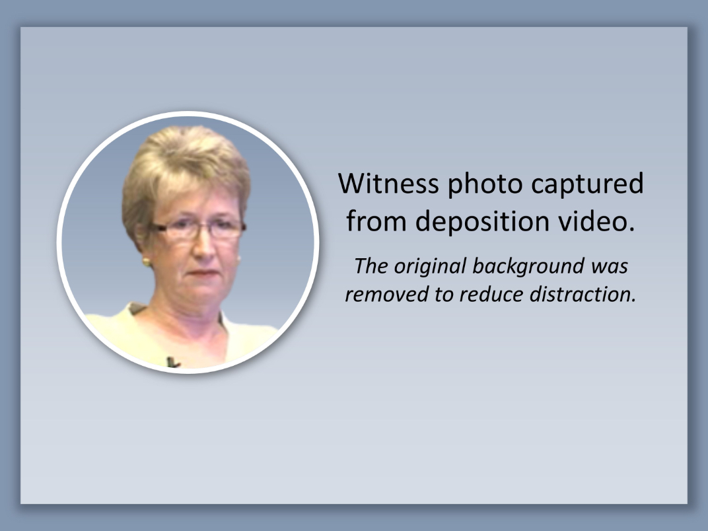
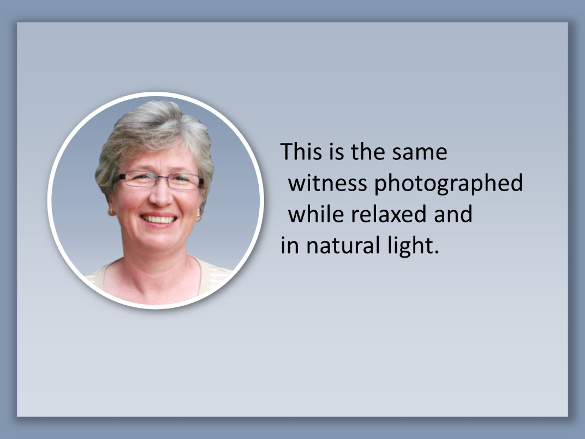
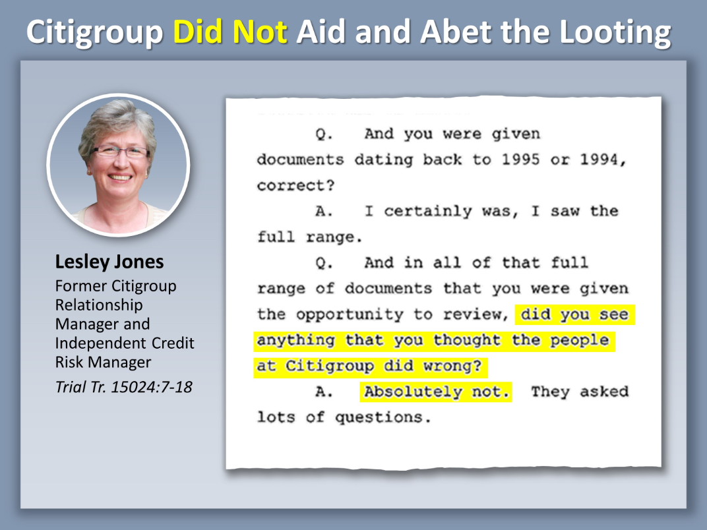
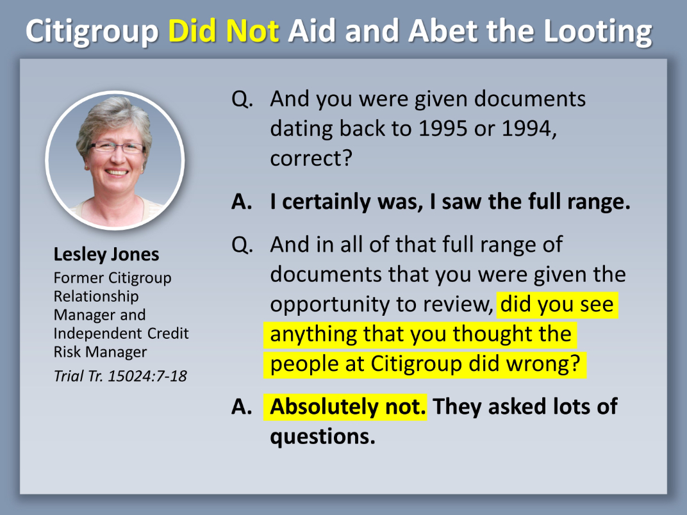

Four Steps to a Compelling Testimony Exhibit
Testimony exhibits play an important role at trial. Deposition exhibits, used in openings, introduce witnesses and preview key evidence. Trial transcript exhibits, used in closings, serve as important reminders of what was said during trial, and help judges and juries come to a decision. Make your testimony exhibits the best they can be by following these four simple steps.
Step 1 – Start with a photo

There is a special part of the brain just for recognizing faces.1
Take advantage of this by adding witness photos to your testimony slides. Deposition videos are readily available sources for photos, but during depositions, witnesses look stressed, the lighting is poor, and the resolution of the final video is usually low.
Step 2 – Make sure it’s a good photo

Look online for better photos of all witnesses. Consider taking photos of your witnesses during prep sessions. You don’t need a studio set up. We photographed this witness with an inexpensive digital camera on a sunny afternoon.
Studies suggest photos with eyes looking forward have the greatest emotional impact.2
Step 3 – Add a title and the testimony

Testimony transcripts usually have more leading (horizontal space between lines) and shorter line lengths than other kinds of documents. This means you can often use a portion of the actual page on your exhibit and still have a readable text size.
Viewers are likley to scan, rather than read every word on the document, so focus their attention by highlighting key language.
Step 4 – Type the text for more flexibility

It is also fine to type transcript text.3 This is particularly helpful if the testimony contains objections that you wish to omit.
Typing also allows you to adjust formatting to distinguish questions from answers, as we’ve done here by having all answers appear in bold.
And don’t forget the finishing touch of adding highlighting.
1. Susan M. Weinschenk, Ph.D., 100 Things Every Designer Needs to Know About People (New Riders, 2011), 9-10.
2. Id.
3. If you prefer typed testimony slides, there are programs such as Impact Trial Consulting's SlideScribe™ that quickly create slides from transcript page and line designations. This can be a lifesaver when you have large amounts of testimony and not a lot of time.